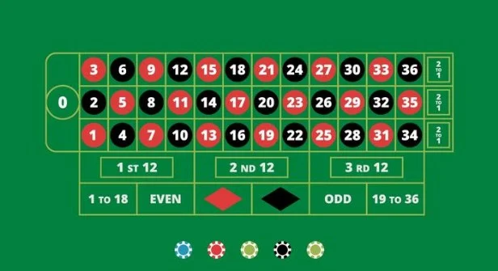
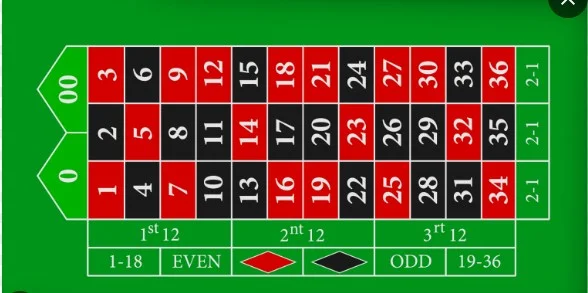
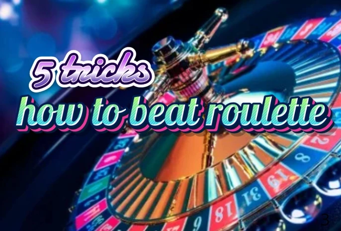
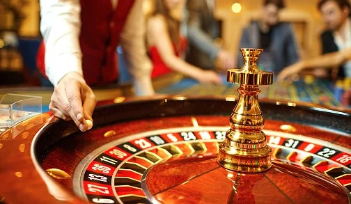

Recomendacion & Consejos
Ruleta / 15 jul, 2024

ruleta europea

ruleta americana



Quieres pertenecer tú también a mi grupo de ganadores.
contactanosLos mejores metodos, consejos y noticias, sobre las ruletas de casino
Recomendacion & Consejos

Recomendacion & Consejos

Recomendacion & Consejos